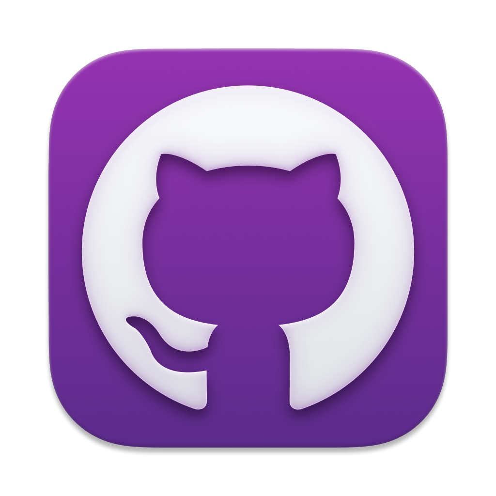
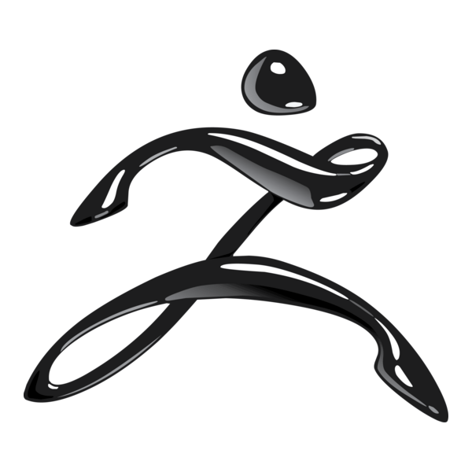
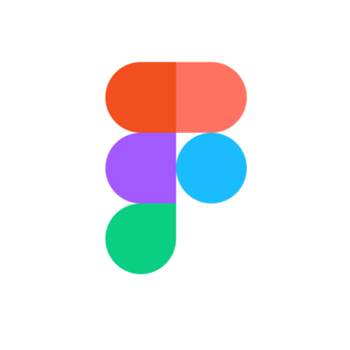
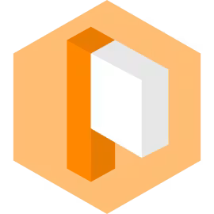
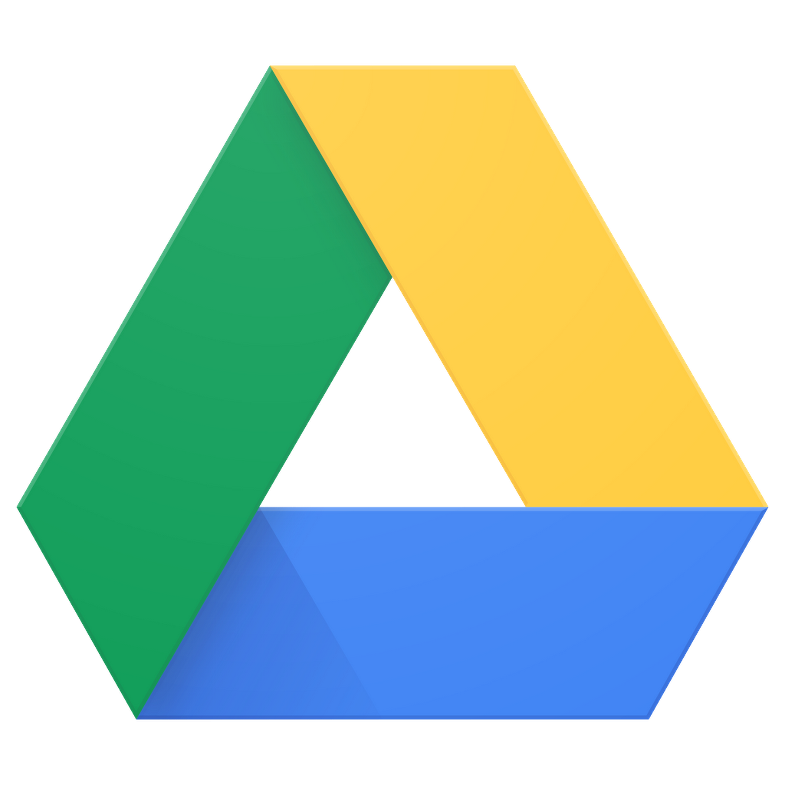

Github

Github has been the place where we stored the entire code in two separate repositories (one for the game project and one for the engine), we also made use of its branching system to work simultaneously on a project of our team scale.
Maya
Maya is the main modelling program used for the art development of the game.
Z-Brush

Z-Brush has been the main tool used for detailing the surfaces of our 3D models.
Substance Painter

Substance is the main texturing tool used during the development.
Blender
Blender importing and exporting tools were used to prepare the formatting of our .fbx so that they are ready for our custom engine.
Figma

Figma was used to make sketches and visual schematics for the game.
Hack&Plan

Hack&Plan is the main tool used during development to organize tasks and track the overall progress of the project.
Discord
Discord has been the main tool used for communication, which was done though a custom server prepared for the development of the project.
Google Drive

Google Drive was used as the main storage for all the files created during the development.